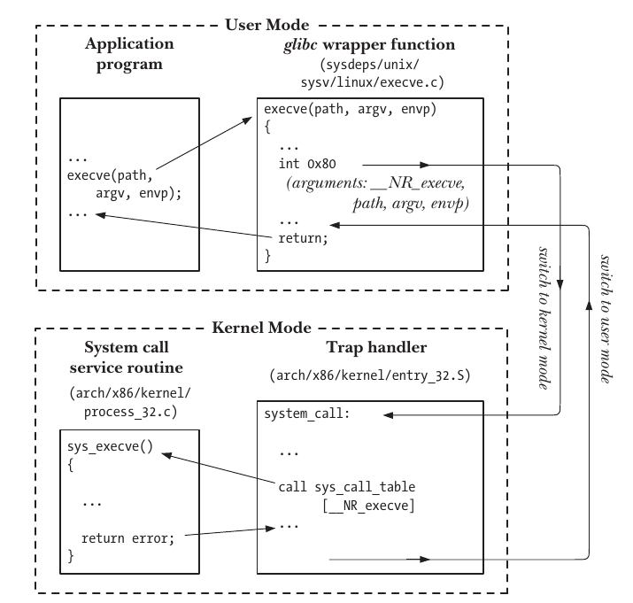

Linux系统编程:概念
本篇文章主要记录了《Linux/Unix系统编程手册》第1-3章的学习笔记。
内核
操作系统 有两个不同的含义:
- 广义上是指 完整的软件包，包括 用来管理计算机资源的核心层软件，以及附带的带有标准的软件工具: 命令行解释器、图形用户界面、文件操作工具和文本编辑器等。
- 狭义上，是指 管理和分配计算机资源(CPU、RAM和设备)的核心层软件。
虽然没有内核，计算机也能运行，但有了内核会极大的简化其他程序的编写和使用。
内核的职责：
- 进程调度：和Unix一样，Linux属于 抢占式多任务操作系统。
- 多任务 指多个任务同时驻留在内存，且每个进程都能获得对CPU的使用权。
- 抢占 是指一组规则，这组规则控制着哪些进程获得对CPU的使用，以及每个进程能使用的时长。
- 上面两者都由 内核进程调度程序决定。
- 内存管理：物理内存(RAM)现在仍是计算机系统中的有限资源，内核必须以 公平、高效 的方式在进程间共享这一资源。为此，Linux采用了虚拟内存管理机制。
- 资源隔离：进程与进程之间、进程与内核之间彼此隔离，一个进程无法读取或修改内核或其他进程的内存内容。
- 资源限制：采用虚拟内存机制，只需在物理内存中保留进程的一部分内容，降低了每个进程对物理内存的需求量，而且能在RAM中同时加载更多的进程。
- 提供文件系统：内核在磁盘上提供有文件系统，允许文件执行创建、获取、更新以及删除等操作。
- 进程管理：内核可以将新程序载入内存，并为其提供所需的资源，等待进程结束之后，内核还要负责回收程序所使用的资源。
- 对设备的访问：计算机外接设备可实现计算机与外界的通信，内核为 程序访问设备 提供了简化版的标准接口，同时还要管理多个进程对每一个设备的访问。
- 联网：内核以用户进程的名义收发网络消息。
- 提供系统调用应用标称接口：进程可以利用 系统调用 请求内核去执行各种任务。(此书的关键内容)
现在处理器架构至少允许CPU在 内核态 和 用户态 下运行，执行硬件指令可使CPU在两种状态之间切换，虚拟内存部分也可以分为 内核空间 和 用户空间，在用户态，CPU只能访问用户空间内存，而处于内核态时，CPU可以访问两部分内存空间。
在进程角度上看，它并不知自己合适会调用CPU执行任务，也不知道自己在内存中的具体位置，进程与进程之间也不能直接通信，仿佛活在虚拟之中。
而 内核 则是运行系统的中枢，管理着系统中进程的所依赖的资源，进程的生死也由内核完成。进程调用的系统资源都是通过系统调用接口由内核完成的。
系统调用
内核可以做很多事情，但用户如果被赋予的内核的权限，某些不规范的操作会导致系统的不稳定。如果用户需要使用到内核的权限去进行某些操作，而又没有相关的权限，那又怎么办呢？
在内核和用户之间，有一 中间层--系统调用(system call)。
系统调用是受控的内核入口，进程可以请求内核以自己的名义去执行某些动作，但 这些动作都是受到一定限制的，以防止用户的不规范操作导致系统的不稳定，如 创建新进程、执行I/O、进程间通信创建管道等。
- 系统调用将处理器从用户态切换到内核态，以便CPU访问收到保护的内核内存。
- 系统调用的组成是固定的，每个系统调用都有唯一一个数字来标识，程序通过名称映射来标识系统调用。
- 每个系统调用可辅之以一套参数，对用户空间与内核空间传递的消息加以规范。
进程通过系统调用的流程如下：

- 1 - 进程调用 库函数。
- 2 - 库函数执行中断指令(0x80)，使处理器由用户态转变为内核态。
- 3 - 内核调用 system_call() 例程来处理这次中断。
- 4 - 以系统调用编号(__NR_execve)在 调用服务例程的列表(system_call_table) 进行检索，发现并调用相应的 系统调用服务例程。
- 5 - 服务例程结束后，返回执行结果，同时将处理器切换回用户态。如果调用服务例程出现错误，库函数会用返回的错误值来设置全局变量 errno。一般调用成功返回的为非负值，失败返回的为负值。
为什么不直接让进程调用系统调用接口？设计库函数的目的是 为了提供比底层系统调用更为方便的调用接口，同时 库函数的功能比底层系统调用函数的功能更强大。例如，与 brk() 系统调用相比，malloc()和free() 函数还执行了各种登记管理工作，内存的释放和分配也因此而容易很多。
系统调用允许进程向内核请求服务，但系统调用的开销会大很多，为了执行系统调用，系统需要临时性的切换到内核态。
PS：POSIX(可移植操作系统接口Protable Operating System Interface)。
课后习题
3-1 解:
代码如下
/*
* Reboot system call: for obvious reasons only root may call it,
* and even root needs to set up some magic numbers in the registers
* so that some mistake won't make this reboot the whole machine.
* You can also set the meaning of the ctrl-alt-del-key here.
*
* reboot doesn't sync: do that yourself before calling this.
*/
SYSCALL_DEFINE4(reboot, int, magic1, int, magic2, unsigned int, cmd,
void __user *, arg)
{
char buffer[256];
int ret = 0;
/* We only trust the superuser with rebooting the system. */
if (!capable(CAP_SYS_BOOT))
return -EPERM;
/* For safety, we require "magic" arguments. */
if (magic1 != LINUX_REBOOT_MAGIC1 ||
(magic2 != LINUX_REBOOT_MAGIC2 &&
magic2 != LINUX_REBOOT_MAGIC2A &&
magic2 != LINUX_REBOOT_MAGIC2B &&
magic2 != LINUX_REBOOT_MAGIC2C))
return -EINVAL;
...
magic2的范围是：
LINUX_REBOOT_MAGIC2 672274793 0x28121969
LINUX_REBOOT_MAGIC2A 85072278 0x05121996
LINUX_REBOOT_MAGIC2B 369367448 0x16041998
LINUX_REBOOT_MAGIC2C 537993216 0x20112000
reboot() 系统调用的magic2必须为上面的数字之一，这些数字是个彩蛋，代表的是 Linus 以及他三个孩子的生日...